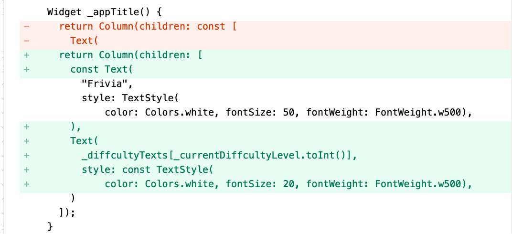

1. Friviaa
- 24.8.10 created
- 24.8.11 updated
1.1. 创建项目
localhost:flutter chenchangqing$ flutter create friviaa
Creating project friviaa...
Running "flutter pub get" in friviaa... 3.3s
Wrote 127 files.
All done!
In order to run your application, type:
$ cd friviaa
$ flutter run
Your application code is in friviaa/lib/main.dart.
增加依赖：
get_it: "7.2.0"
dio: "4.0.4"
provider: "6.0.2"
1.2. 自定义字体
1.2.1. 下载字体
- 打开 https://fonts.google.com
- 搜索
architects，点击Architects Daughter - 在字体详情页面右上角，点击
Get font下载 - 下载结果为
Architects_Daughter.zip
1.2.2. 加载字体
- 新建
assets/fonts - 解压
Architects_Daughter.zip - 将解压后的文件
ArchitectsDaughter-Regular.ttf粘贴至assets/fonts - 修改
.yaml：fonts: - family: ArchitectsDaughter fonts: - asset: assets/fonts/ArchitectsDaughter-Regular.ttf
1.2.3. 应用字体
修改main.dart:
@override
Widget build(BuildContext context) {
return MaterialApp(
title: 'Frivia',
theme: ThemeData(
fontFamily: 'ArchitectsDaughter',
scaffoldBackgroundColor: const Color.fromRGBO(31, 31, 31, 1.0),
primarySwatch: Colors.blue,
),
home: const MyHomePage(title: 'Flutter Demo Home Page'),
);
}
1.2.4. 当前UI

1.3. 生成API
- 打开 https://opentdb.com/api_config.php
- Select Difficulty: Easy
- Select Type: True/False
- 点击
GENERATE API URL - 生成 https://opentdb.com/api.php?amount=10&difficulty=easy&type=boolean API

{ "response_code": 0, "results": [ { "type": "boolean", "difficulty": "easy", "category": "Entertainment: Video Games", "question": "In Splatoon, the Squid Sisters are named Tako and Yaki.", "correct_answer": "False", "incorrect_answers": [ "True" ] }, { "type": "boolean", "difficulty": "easy", "category": "Entertainment: Japanese Anime & Manga", "question": "Kiznaiver is an adaptation of a manga.", "correct_answer": "False", "incorrect_answers": [ "True" ] }, { "type": "boolean", "difficulty": "easy", "category": "Sports", "question": "In Rugby League, performing a "40-20" is punished by a free kick for the opposing team.", "correct_answer": "False", "incorrect_answers": [ "True" ] }, { "type": "boolean", "difficulty": "easy", "category": "Entertainment: Books", "question": "Shub-Niggurath is a creature that was created by \tJ. R. R. Tolkien in his novel "The Lord of The Rings".", "correct_answer": "False", "incorrect_answers": [ "True" ] }, { "type": "boolean", "difficulty": "easy", "category": "Science: Mathematics", "question": "An isosceles triangle has two sides of equal length as opposed to three.", "correct_answer": "True", "incorrect_answers": [ "False" ] }, { "type": "boolean", "difficulty": "easy", "category": "Entertainment: Video Games", "question": "In RuneScape, one must complete the "Dragon Slayer" quest before equipping Rune Platelegs.", "correct_answer": "False", "incorrect_answers": [ "True" ] }, { "type": "boolean", "difficulty": "easy", "category": "Entertainment: Video Games", "question": "Watch_Dogs 2 is a prequel.", "correct_answer": "False", "incorrect_answers": [ "True" ] }, { "type": "boolean", "difficulty": "easy", "category": "Entertainment: Video Games", "question": "Peter Molyneux was the founder of Bullfrog Productions.", "correct_answer": "True", "incorrect_answers": [ "False" ] }, { "type": "boolean", "difficulty": "easy", "category": "History", "question": "The Spitfire originated from a racing plane.", "correct_answer": "True", "incorrect_answers": [ "False" ] }, { "type": "boolean", "difficulty": "easy", "category": "Animals", "question": "In 2016, the IUCN reclassified the status of Giant Pandas from endangered to vulnerable.", "correct_answer": "True", "incorrect_answers": [ "False" ] } ] }
1.4. GamePage
1.4.1. 新建pages/game_page.dart
import 'package:flutter/material.dart';
class GamePage extends StatelessWidget {
double? _deviceHeight, _deviceWidth;
GamePage({Key? key}) : super(key: key);
@override
Widget build(BuildContext context) {
_deviceHeight = MediaQuery.of(context).size.height;
_deviceWidth = MediaQuery.of(context).size.width;
return _buildUI();
}
Widget _buildUI() {
return Scaffold(
body: SafeArea(
child: Container(
padding: EdgeInsets.symmetric(horizontal: _deviceHeight! * 0.05),
child: _gameUI(),
),
),
);
}
Widget _gameUI() {
return Column(
mainAxisAlignment: MainAxisAlignment.spaceEvenly,
mainAxisSize: MainAxisSize.max,
crossAxisAlignment: CrossAxisAlignment.center,
children: [_questionText()],
);
}
Widget _questionText() {
return const Text(
"Test Question 1, Nothing Interesting",
style: TextStyle(
color: Colors.white, fontSize: 25, fontWeight: FontWeight.w400),
);
}
}
1.4.2. 修改main.dart
import 'package:flutter/material.dart';
import 'package:friviaa/pages/game_page.dart';
void main() {
runApp(const MyApp());
}
class MyApp extends StatelessWidget {
const MyApp({super.key});
// This widget is the root of your application.
@override
Widget build(BuildContext context) {
return MaterialApp(
title: 'Frivia',
theme: ThemeData(
fontFamily: 'ArchitectsDaughter',
scaffoldBackgroundColor: const Color.fromRGBO(31, 31, 31, 1.0),
primarySwatch: Colors.blue,
),
home: GamePage(),
);
}
}
1.4.3. 当前UI
1.5. 增加True/False按钮
1.5.1. 增加按钮组件
Widget _trueButton() {
return MaterialButton(
onPressed: () {},
color: Colors.green,
minWidth: _deviceWidth! * 0.80,
height: _deviceHeight! * 0.10,
child: const Text(
"True",
style: TextStyle(
color: Colors.white,
fontSize: 25,
),
),
);
}
Widget _falseButton() {
return MaterialButton(
onPressed: () {},
color: Colors.red,
minWidth: _deviceWidth! * 0.80,
height: _deviceHeight! * 0.10,
child: const Text(
"False",
style: TextStyle(
color: Colors.white,
fontSize: 25,
),
),
);
}
1.5.2. 修改_gameUI方法
Widget _gameUI() {
return Column(
mainAxisAlignment: MainAxisAlignment.spaceEvenly,
mainAxisSize: MainAxisSize.max,
crossAxisAlignment: CrossAxisAlignment.center,
children: [
_questionText(),
Column(
children: [
_trueButton(),
SizedBox(
height: _deviceHeight! * 0.01,
),
_falseButton(),
],
)
],
);
}
1.5.3. 当前UI
1.6. Use Provider
1.6.1. 新增providers/game_page_provider.dart
import 'package:dio/dio.dart';
import 'package:flutter/material.dart';
class GamePageProvider extends ChangeNotifier {
final Dio _dio = Dio();
BuildContext context;
GamePageProvider({required this.context}) {
_dio.options.baseUrl = 'https://opentdb.com/api.php';
print("Hello");
}
}
1.6.2. 修改game_page.dart

1.7. 请求数据
修改game_page_provider.dart:
Future<void> _getQuestionsFromAPI() async {
var _response = await _dio.get('', queryParameters: {
'amount': _maxQuestions,
'type': 'boolean',
'difficulty': 'easy',
});
var _data = jsonDecode(_response.toString());
questions = _data["results"];
}
1.8. 显示问题名称
1.8.1. 修改game_page_provider.dart
1.8.2. 修改game_page.dart中_buildUI:
Widget _buildUI() {
return Builder(builder: (_context) {
_pageProvider = _context.watch<GamePageProvider>();
if (_pageProvider!.questions != null) {
return Scaffold(
body: SafeArea(
child: Container(
padding: EdgeInsets.symmetric(horizontal: _deviceHeight! * 0.05),
child: _gameUI(),
),
),
);
} else {
return const Center(
child: CircularProgressIndicator(
color: Colors.white,
),
);
}
});
}
1.8.3. 修改game_page.dart中_questionText
Widget _questionText() {
return Text(
_pageProvider!.getCurrentQuestionText(),
style: const TextStyle(
color: Colors.white, fontSize: 25, fontWeight: FontWeight.w400),
);
}
1.9. 点击True/False
1.9.1. 回答问题
修改game_page_provider.dart，新增方法：
void answerQuestion(String _answer) async {
bool isCorrect =
questions![_currentQuestionCount]["correct_answer"] == _answer;
_currentQuestionCount++;
print(isCorrect ? "Correct" : "InCorrect");
notifyListeners();
}
1.9.2. 点击回答
修改game_page.dart中_trueButton、_falseButton的onPressed:
_pageProvider?.answerQuestion("True");
_pageProvider?.answerQuestion("False");
1.10. 显示回答结果
修改game_page_provider.dart中answerQuestion方法：

showDialog(
context: context,
builder: (BuildContext _context) {
return AlertDialog(
backgroundColor: isCorrect ? Colors.green : Colors.red,
title: Icon(
isCorrect ? Icons.check_circle : Icons.cancel_sharp,
color: Colors.white,
),
);
});
await Future.delayed(const Duration(seconds: 1));
Navigator.pop(context);
1.11. 显示回答比分
- 修改
game_page_provider.dart，新增int _correctCount = 0;属性 - 修改
game_page_provider.dart中answerQuestion回答方法void answerQuestion(String _answer) async { bool isCorrect = questions![_currentQuestionCount]["correct_answer"] == _answer; _correctCount += isCorrect ? 1 : 0; _currentQuestionCount++; showDialog( context: context, builder: (BuildContext _context) { return AlertDialog( backgroundColor: isCorrect ? Colors.green : Colors.red, title: Icon( isCorrect ? Icons.check_circle : Icons.cancel_sharp, color: Colors.white, ), ); }); await Future.delayed(const Duration(seconds: 1)); Navigator.pop(context); if (_currentQuestionCount == _maxQuestions) { endGame(); } else { notifyListeners(); } } - 新增方法
endGame;Future<void> endGame() async { showDialog( context: context, builder: (BuildContext builder) { return AlertDialog( backgroundColor: Colors.blue, title: const Text( "End Game!", style: TextStyle(fontSize: 25, color: Colors.white), ), content: Text("Score: $_correctCount/$_maxQuestions"), ); }); await Future.delayed(const Duration(seconds: 3)); Navigator.pop(context); Navigator.pop(context); }
1.12. 新增首页
新增pages/home_page.dart:
import 'package:flutter/material.dart';
class HomePage extends StatefulWidget {
const HomePage({Key? key}) : super(key: key);
@override
State<HomePage> createState() => _HomePageState();
}
class _HomePageState extends State<HomePage> {
double? _deviceHeight, _deviceWidth;
@override
Widget build(BuildContext context) {
_deviceHeight = MediaQuery.of(context).size.height;
_deviceWidth = MediaQuery.of(context).size.width;
return Scaffold(
body: SafeArea(
child: Container(
padding: EdgeInsets.symmetric(horizontal: _deviceWidth! * 0.10),
child: Center(
child: Column(
mainAxisAlignment: MainAxisAlignment.spaceEvenly,
mainAxisSize: MainAxisSize.max,
crossAxisAlignment: CrossAxisAlignment.center,
children: [_appTitle()],
),
),
),
),
);
}
Widget _appTitle() {
return Column(children: const [
Text(
"Frivia",
style: TextStyle(
color: Colors.white, fontSize: 50, fontWeight: FontWeight.w500),
)
]);
}
}
修改main.dart: home: HomePage(),
1.13. 新增Slider
修改home_page.dart
1.13.1. 增加属性:
double _currentDiffcultyLevel = 0;
final List<String> _diffcultyTexts = ["Easy", "Medium", "Hard"];
1.13.2. 修改_appTitle：
Widget _appTitle() {
return Column(children: [
const Text(
"Frivia",
style: TextStyle(
color: Colors.white, fontSize: 50, fontWeight: FontWeight.w500),
),
Text(
_diffcultyTexts[_currentDiffcultyLevel.toInt()],
style: const TextStyle(
color: Colors.white, fontSize: 20, fontWeight: FontWeight.w500),
)
]);
}

1.13.3. 新增_diffcultySlider:
Widget _diffcultySlider() {
return Slider(
label: "Difficulty",
min: 0,
max: 2,
divisions: 3,
value: _currentDiffcultyLevel,
onChanged: (_value) {
setState(() {
_currentDiffcultyLevel = _value;
});
});
}
1.13.4. 修改build:

1.14. 开始按钮
1.14.1. import
import 'package:friviaa/pages/game_page.dart';
1.14.2. 修改build
1.14.3. 新增开始按钮
Widget _startGameButton() {
return MaterialButton(
onPressed: () {
Navigator.push(context,
MaterialPageRoute(builder: (BuildContext _context) {
return GamePage();
}));
},
color: Colors.blue,
minWidth: _deviceWidth! * 0.80,
height: _deviceHeight! * 0.10,
child: const Text(
"Start",
style: TextStyle(color: Colors.white, fontSize: 25),
),
);
}